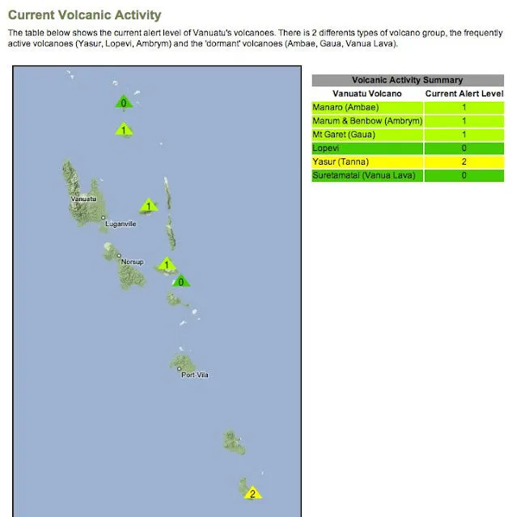
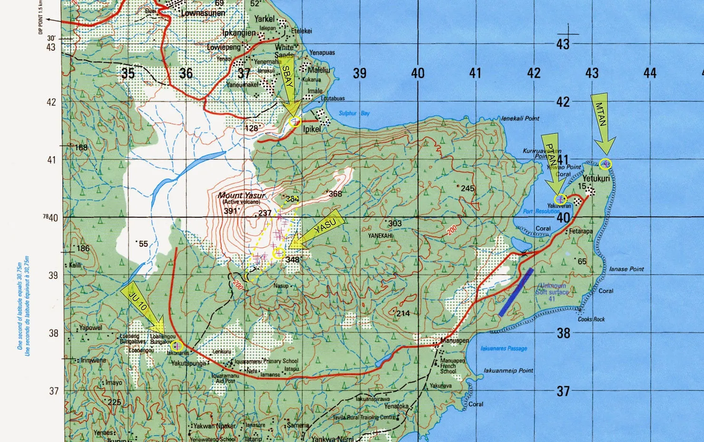

Ca y est, le projet démarre enfin ! Nous avons tous les deux pris un mois sabbatique, nous pouvons maintenant prendre l'avion de ligne demain matin pour rejoindre la Nouvelle Calédonie, et de là la capitale du Vanuatu et enfin l'île de Tanna. L'objectif : tenter de réaliser une modélisation 3D de la zone de la Caldera de Siwi, pour les volcanologues du LMV. Cette mission-test nous permettra de valider l'intégralité du concept : à la fois la réalisation de la mission scientifique (pour cette fois-ci uniquement, nous louerons un avion sur place), mais aussi les interactions avec les élèves des écoles qui nous suivent, et enfin la prise d'images pour les films qu'on a prévu de réaliser. Enjeu de taille, donc !
De nombreux problèmes sont encore à résoudre parmi lesquels l'activité actuelle du Volcan, qui nous empêche de nous approcher du dôme... Vous voyez sur la carte ? Le volcan qu'on prévoit à survoler est au niveau 2, le plus actif de la zone ! Affaire à suivre, donc.

